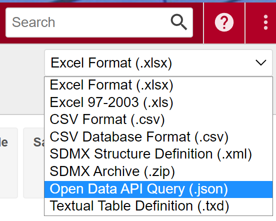

In the following example, a table will be exported from STATcube into an R session. This process involves four steps
- create a table with the STATcube GUI (table view)
- download an “API request” for the table (format:
*.json). - send the
jsonfile to the API usingsc_table(). - convert the return value into a
data.frame
It is assumed that you already provided your API key as described in the API key article.
Create a table with the STATcube GUI
Use the graphical user interface of STATcube to create a table. Visit STATcube and select a database. This will open the table view where you can create a table. See the STATcube manual for details.
Download an API request
Choose “Open Data API Abfrage (.json)” in the download options. This will save a json file on your local file system.

It might be the case thatthis download option is not listed as a download format. This means that the current user is not permitted to use the API.
Send the json to the API
Provide the path to the downloaded as a string file in
sc_table().
my_table <- sc_table(json_file = "path/to/api_request.json")The object my_table is created via the raw API response
from httr::POST() against the /table
endpoint. Printing the object will summarize the request. We will
demonstrate this with an example json via sc_example().
(json_path <- sc_example("population_timeseries.json"))
## [1] ~/R/3.6/STATcubeR/json_examples/population_timeseries.json
my_table <- sc_table(json_path)
my_table## An object of class sc_table
##
## Database Population at the beginning of the quarter since 2002
## Measures Number of persons
## Fields Quarter, Age in single years <96>, Sex <2>, Commune <2383>
## (Province-District)
##
## Request 2021-11-20 13:18:34
## STATcubeR 0.3.4.4Convert the response into a data frame
The return value of sc_table() can be converted into a
data.frame. To do that, use the $tabulate()
method.
my_table$tabulate()# A STATcubeR tibble: 8,316 x 5
Quarter `Age in single ye… `Sex <2>` `Commune <2383> (Pr… `Number of pers…
* <date> <fct> <fct> <fct> <dbl>
1 2002-01-01 Up to 14 years old male Burgenland <AT11> 21287
2 2002-01-01 Up to 14 years old male Carinthia <AT21> 47230
3 2002-01-01 Up to 14 years old male Vienna <AT13> 117920
4 2002-01-01 Up to 14 years old male Vorarlberg <AT34> 34798
5 2002-01-01 Up to 14 years old male Tyrol <AT33> 62794
6 2002-01-01 Up to 14 years old male Styria <AT22> 97538
7 2002-01-01 Up to 14 years old male Salzburg <AT32> 46955
8 2002-01-01 Up to 14 years old male Upper Austria <AT31> 127316
9 2002-01-01 Up to 14 years old male Lower Austria <AT12> 133928
10 2002-01-01 Up to 14 years old female Burgenland <AT11> 20405
# … with 8,306 more rowsThis will produce a tidy table, which contains a column for each field of the table. Furthermore, one column will be present for each measure.
Further reading
- Functionalities of the returned object are explained in the STATcubeR data article.
- The saved tables article shows an alternative way of importing tables.